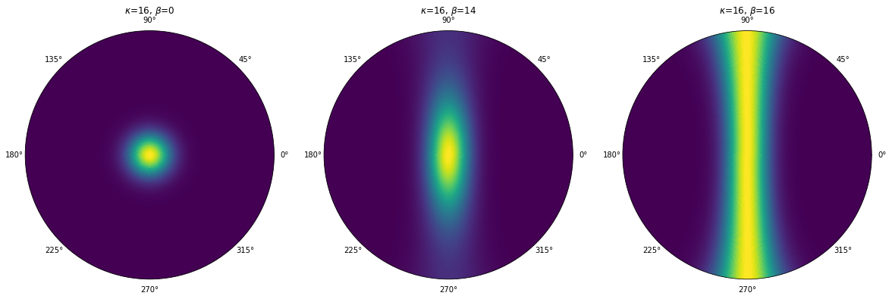

Introduction to Diffusion:
Model-driven diffusion MRI analysis

Ariel Rokem, University of Washington eScience Institute
Follow along at: https://arokem.github.io/ismrm2018models

What is the goal of diffusion MRI?
To make inferences about brain connectivity
To make inferences about tissue properties
To make inferences about differences between groups
To make inferences about individual brains
Models are tools for inference
They summarize the data (reductionism)
They endow the data with specific meaning (interpretation)
They help predict other data (statistics and ML)
They help us to explain our results (theory)
Classes of models
1. Phenomenological models
2. Mechanistic models
Phenomenological models
"...models that only represent observable properties of their targets and refrain from postulating hidden mechanisms..."Diffusion Tensor Model
Diffusion Tensor Model
$$ S(\theta) = S_0 e^{-b\theta^tQ\theta} $$
$$ \frac{S(\theta)}{S_0} = e^{-b\theta^tQ\theta} $$
$$ log[\frac{S(\theta)}{S_0}] = -b\theta^tQ\theta $$
=> Fit as a (weighted) linear model
DTI statistics


Inferences about the underlying mechanisms
Changes in FA and MD are associated with:Fiber diameter
Fiber density
Membrane permeability
Demylenation
But also where there are crossing fibers (Pierpaoli and Basser, 1996)
"White matter integrity"
But parameters can serve as "biomarkers"!


Amyotrophic Lateral Sclerosis (ALS)
Classify patients based on the tissue properties in this part of the brain
Random Forest algorithm => 80% accuracy
More challenges

Extending DTI: Diffusion Kurtosis
$$ log[\frac{S(\theta, b)}{S_0}] = -bD(\theta) + \frac{1}{6} b^2 D (\theta)^2 K (\theta) $$
$$ D(\theta)= \sum_{i=1}^{3}\sum_{j=1}^{3}\theta_{i}\theta_{j}Q_{ij} = \theta^t Q \theta $$
$$ K(\theta)=\frac{MD^{2}}{D(\theta)^{2}} \sum_{i=1}^{3}\sum_{j=1}^{3}\sum_{k=1}^{3}\sum_{l=1}^{3}\theta_{i}\theta_{j}\theta_{k}\theta_{l}W_{ijkl} $$
W is a 4th order tensor
81 elements, but only 15 are independent
DKI
Additional statisticsMechanistic models
Often mixture models
Signal is derived from a sum of components:
$$ S(\theta) = f_1 S_1(\theta) + f_2 S_2(\theta) + ... + f_n S_n(\theta) $$
Where $f_i$ is a volume fraction and $S_i$ is a signal from that component
$$ \sum{f_i} = 1 $$
Types of compartments
Intra-cellular diffusion
Extra-cellular diffusion
Stick and Ball
$$ S(\theta) = f_w e^{-bD_w} + f_t e^{-b\theta^t A \theta} $$
where:
$$
A = \begin{bmatrix}
1 & 0 & 0\\
0 & 0 & 0 \\
0 & 0 & 0
\end{bmatrix}
$$
Dispersion of the compartments
(Kaden et al. 2007, Sotiropolous et al., 2012 Tariq et al., 2016)

Sparse Fascicle Models
Bridging phenomenological and mechanistic
Free water DTI
$$ S(\theta) = f_w e^{-bD_w} + f_t e^{-b\theta^t Q \theta} $$
How do we know if a model is a good?
Check your assumptions
Benchmark with other methods
Parameter reliability
Model accuracy

$$ Relative~RMSE = \frac{RMSE(model)}{RMSE(test-retest)} $$
If $rRMSE < 1$
=> good model


longitudinal fasciculus
ISBI White Matter Challenge 2015
6 voxels in genu of CC
6 voxels in fornix
Participants were given access to 75% of the data
But also
Model parameters often undetermined
Two settings (or more) equally accurate
"Rashomon effect" (Breiman, 2001)
Software for model-driven dMRI
DIPY: Diffusion Imaging in Pythondmipy
Summary and conclusions
Contact information